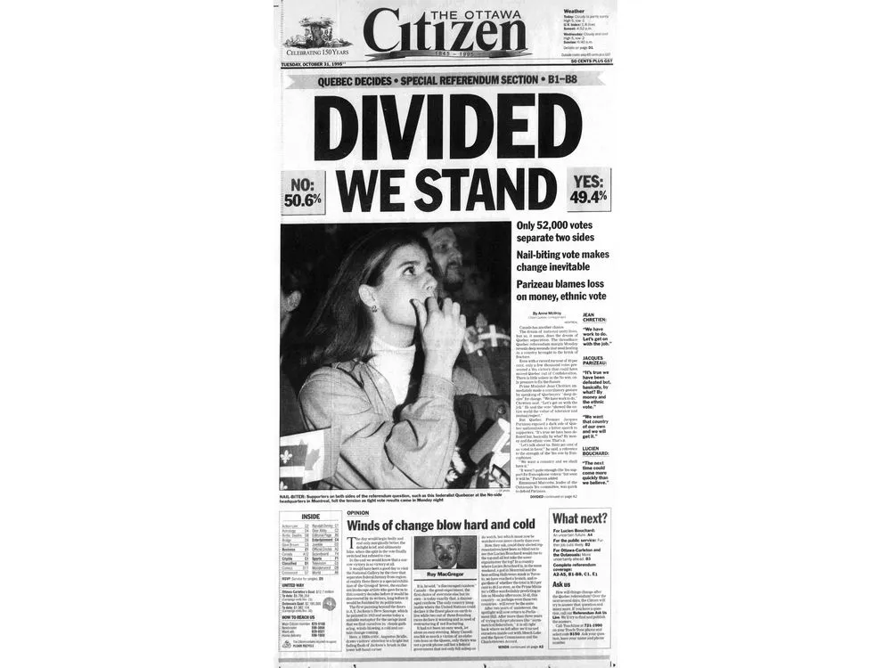
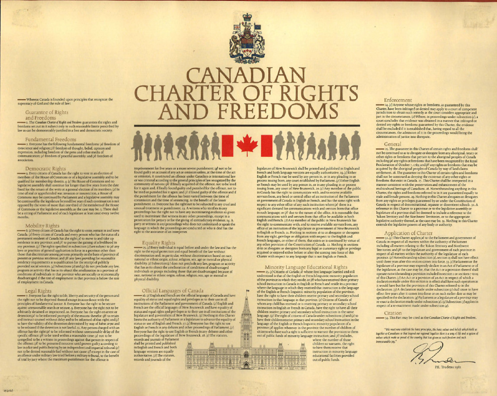
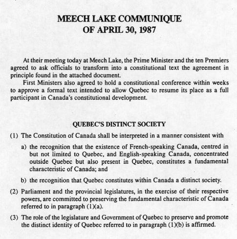

Significance: In 1980, Quebec held a vote to decide if it should become an independent country. The result was a "no" vote. This ment most Quebecers did not want to leave Canada. But, the vote showed that many people in Quebec wanted more power and control over their own lives. This was setting up future negotiations like the Meech Lake Accord.
Significance: After the 1980 vote, Quebec nationalism was still strong. The province wanted more recognition for its French culture. This led to increased pressure on the government to address Quebec’s concerns and to find a way to make Quebec feel more included in Canada.
Significance: In 1982, the Canadian Constitution was changed, but Quebec refused to sign it. The province felt ignored because the changes were made without asking for Quebec's opinion. This caused more tension between Quebec and the rest of Canada, showing that something needed to be done to bring Quebec back into the country. 
Significance: In 1987, the Meech Lake Accords were negotiated between Quebec and Canada. The goal was to change the Canadian Constitution to recognize Quebec as its own nation and address other concerns. These talks were a chance to find a solution to Quebecs wishes with the 1982 Constitution and its relationship with the rest of Canada.
